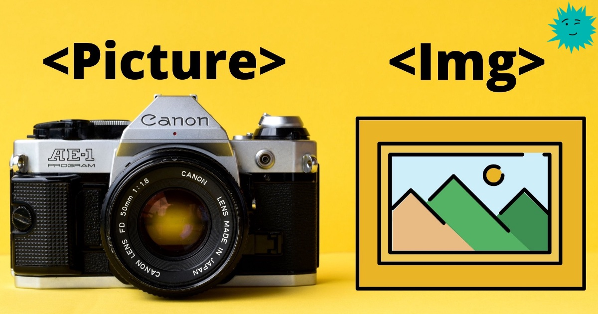

Почему нужно использовать тег <picture> вместо <img>
Использование изображений и анимаций в интерфейсах пользователя стало распространённой практикой в современных веб-приложениях. Хотя эти примеры современного дизайна делают упор на повышение удобства работы с приложениями, если изображения не адаптируются ко всем устройствам, то могут возникать проблемы.
Разработчики, должны удовлетворять потребностям пользователей. Но чаще всего мы упускаем мелочи, способные быть очень важными из-за того, что мы ищем решения на более высоких уровнях.
Выбор между тегами picture и img может показаться мелким решением, но сделав правильный выбор, вы сможете повысить и удобство для пользователя, и производительность.
В этой статье мы расскажем о различиях между тегами picture и img и объясним, почему тег picture более совершенен, чем img.
Когда в следующий раз вы будете создавать компонент изображения на React, то воспользуйтесь полученными в этой статье знаниями. Возвращайте подходящий тег в соответствии с полученными свойствами и обрабатывайте все необходимые альтернативы. Благодаря этому вы получите супероптимизированнй компонент изображения, который можно использовать во всех веб-проектах.
Почему тега img недостаточно для современных веб-приложений?
Как все мы знаем, тег Img в течение длительного периода времени был одним из фундаментальных элементов HTML, и никто не сомневался в его простоте и применимости.
Однако с появлением устройств, имеющих разные размеры экрана, разрешения и сложные требования, начали возникать вопросы об отзывчивости этого тега и возможности его использования в приложениях, рассчитанных на множество различных устройств.
Все эти вопросы можно сгруппировать в две большие категории:
- Смена разрешения — проблема передачи изображений меньшего размера для устройств с маленькими экранами. Ориентация графики — проблема отображения различных изображений при разных размерах экрана.
- Давайте посмотрим, как решаются эти проблемы и узнаем о дополнительных возможностях тега picture.
Смена разрешения при помощи атрибутов srcset и sizes
Как говорилось выше, современные веб-дизайнеры для привлечения пользователей часто используют изображения высокого разрешения. Но мы, разработчики, должны внимательно выбирать подходящий HTML-элемент.
Допустим, вы используете простой тег Img для изображений высокого разрешения. В таком случае при запуске приложения одно и то же изображение будет использоваться на каждом устройстве, что приведёт к проблемам с производительностью в устройствах с низким разрешением экрана, например, в мобильных телефонах.
Это может привести к более долгой загрузке изображений и частичной загрузке изображений сверху вниз.

Проблема загрузки изображения сверху вниз
Эту проблему можно легко решить тегом picture при помощи атрибутов srcset и sizes.
Атрибут srcset может принимать несколько изображений с соответствующей шириной в пикселях, а браузер использует эти значения для выбора между указанными изображениями. В показанном выше примере есть три версии одного и того же изображения в трёх разных размерах.
Атрибут sizes задаёт пространство, которое изображение будет занимать на экране. В показанном выше примере изображение займёт до 1200px, если минимальная ширина экрана равна 1280px.
Тем не менее, рекомендуется не использовать тег Picture только для смены разрешения, потому что ту же задачу можно решить с помощью новой версии тега Img (имеющей поддержку большего количества браузеров).
Однако в большинстве случаев нам нужно решать проблему и смены разрешения, и ориентации графики, и лучшим решением для этого является тег picture.
Поэтому давайте посмотрим, как можно решить проблему ориентации графики с помощью тега picture.
Ориентация графики при помощи атрибута media
Основной принцип ориентации графики — показ различных изображений на основании размера экрана устройства. В большинстве случаев, изображение замечательно выглядящее на больших экранах, оказывается обрезанным или очень мелким при просмотре на мобильном устройстве.
Мы можем решить эту проблему, создав различные версии изображения для разных размеров экрана. Эти разные версии могут быть альбомными, портретными или любыми другими изменёнными версиями того же изображения.
С помощью тега picture мы можем легко обеспечить смену разрешения, воспользовавшись несколькими тегами source внутри тега picture.
Затем можно использовать атрибут media для задания различных условий среды, в которых будут использоваться эти источники. Также можно использовать атрибуты srcset и sizes аналогично тому, о чём мы говорили в предыдущем разделе.
В показанном ниже примере демонстрируется полная реализация ориентации графики и смены разрешения при помощи тега picture.
Если экран находится в альбомной ориентации, то браузер будет отображать изображения из первого набора, а если в портретной, то из второго набора. Кроме того, можно использовать атрибут media с параметрами max-width и min-width:
Последний тег img используется для обратной совместимости с браузерами, не поддерживающими теги picture.
Использование с частично поддерживаемыми типами изображений
Благодаря быстрому развитию технологий ежедневно появляется множество современных типов изображений. Некоторые из них, например webp, svg и avif, обеспечивают большее удобство для пользователей.
С другой стороны, у некоторых браузеров существуют ограничения в обработке этих современных типов изображений, и если не использовать совместимые типы изображений, это может вызвать проблемы.
Но мы можем с лёгкостью решить эту проблему при помощи тега Picture, поскольку он позволяет нам указать внутри несколько источников.
В показанный выше пример включены три типа изображений в форматах avif, webp и png. Сначала браузер попробует формат avif, если не получится, то попробует webp. Если браузер не поддерживает ни один из них, то использует изображение png.
Ситуация с тегом picture стала ещё интереснее, когда разработчики Chrome объявили о том, что «во вкладке Rendering инструментов DevTools появится две новые эмуляции для эмулирования частично поддерживаемых типов изображений».
Эту картинку можем ресайзить экраном браузера
В заключение
Хоть и говорят о том, насколько лучше тег picture по сравнению с тегом img, я уверен, что img не умер и умрёт ещё не скоро.
Если мы будем с умом использовать имеющиеся у него атрибуты srcset и size, то можем выжать из тега img максимум. Например, можно решить проблему смены разрешения при помощи одного только тега img.
С другой стороны, можно использовать тег picture, чтобы решить проблемы и смены разрешения, и ориентации графики с помощью запросов условий среды и других атрибутов.
Среди прочих достоинств тега picture способность работать с частично поддерживаемыми типами изображений и поддержка Chrome DevTools.
Однако оба эти элемента имеют свои плюсы и минусы. Поэтому нам нужно обдумывать и выбирать наиболее подходящий к нашим требованиям элемент.